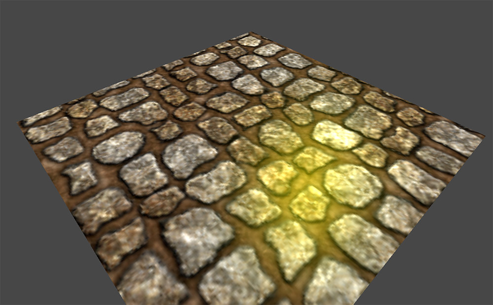
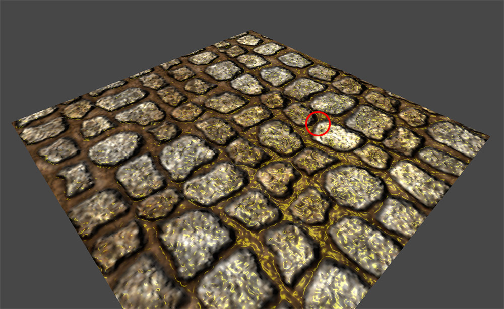
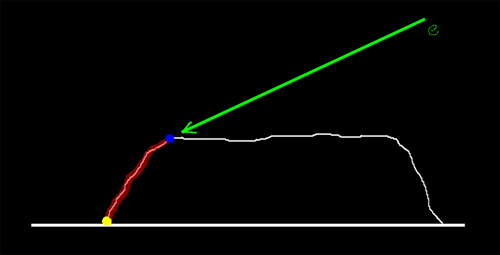
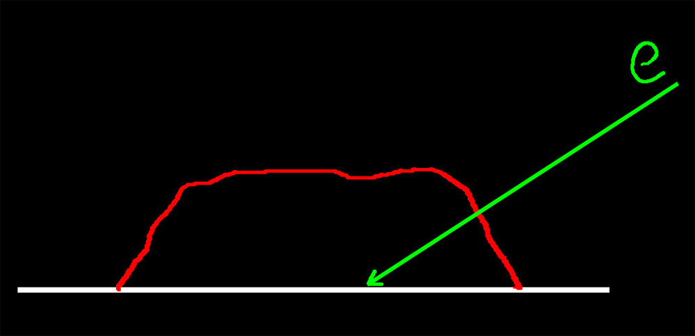
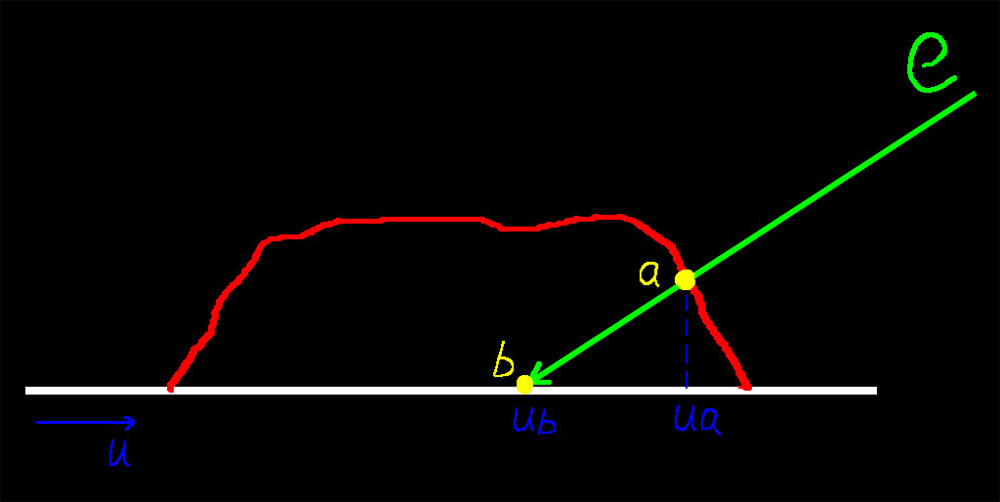
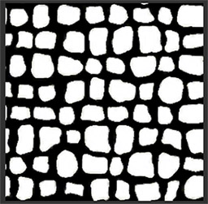
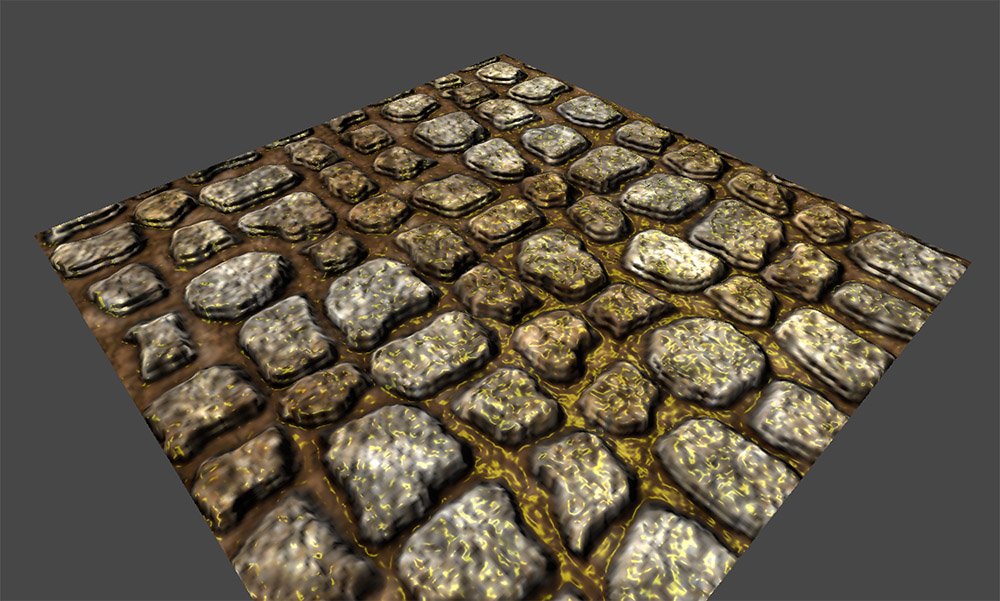
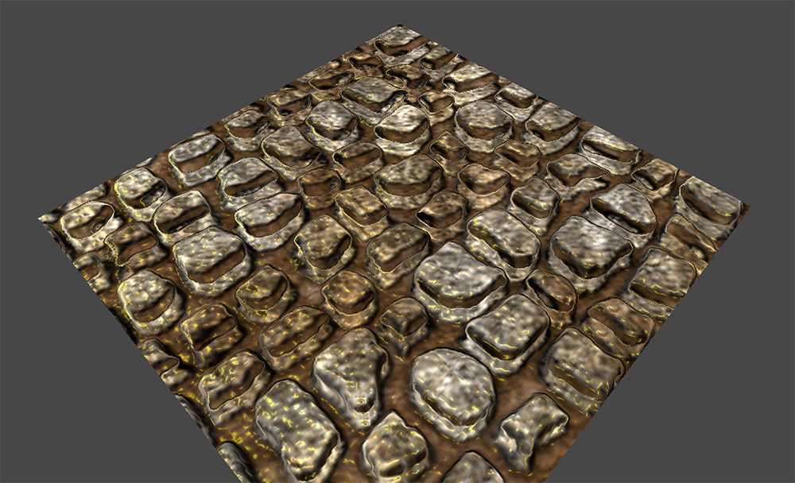
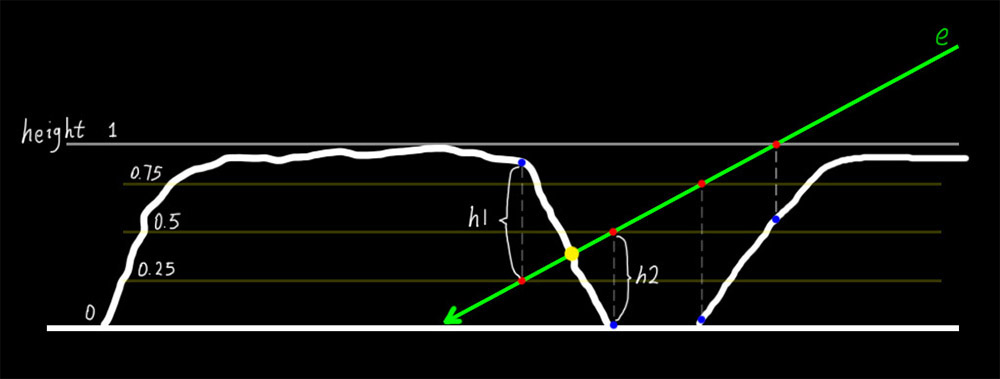
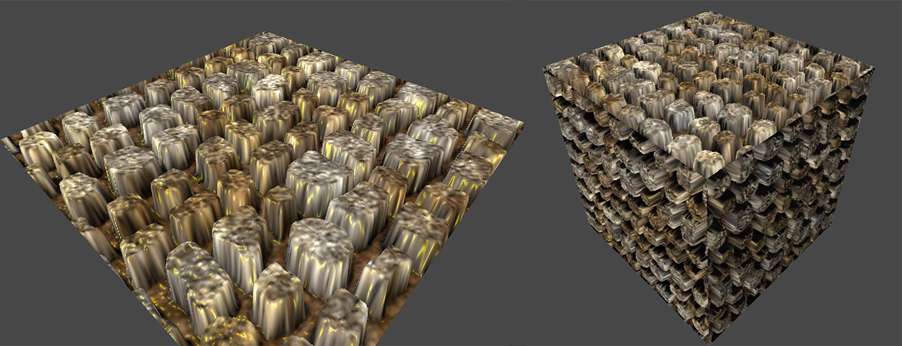

视差贴图（Parallax Mapping）
2016-4-19
使用顶点光照的模型，当模型的面数很少的时候，光照效果会显得很奇怪，因为只有顶点上的光照是正确计算出来的，三角面上的光照都是通过硬件插值得到，所以难免会出现问题。基于像素的光照可以很好的改善这个问题。如果想要表现出模型表面凹凸不平，那就需要很高的面数制作出凹凸的模型。

然后就出现法线贴图。法线贴图可以在低面数的模型上表现出高面数模型的很多细节。法线贴图并不是把模型的面数提高了，而是使用法线贴图中的法线来计算光照，通过明暗效果作假，让观察者误以为模型有凹凸。法线贴图只能在明暗效果上作假（模拟凹凸），无法控制表面的凹凸程度。即使我们使用图像软件强制调出一个凹凸非常明显的法线贴图，通过仔细观察，会法线效果也是有问题的。

上面的是一张用了法线贴图的地面，在红色圆圈的地方是有问题的。我们使用一张平面图来分析下。

这是一张凸起砖块的截面图，绿色箭头表示视线的方向，白色线条表示砖块的横截面。按照常识来看，我们能看到砖块的最远的一点是蓝色点，因为蓝色点后面（红色线条部分）的砖块由于高度较低，被前面挡住了。但是从上面那张使用了法线贴图的地面效果图上可以看到，蓝色点后的砖块并没有被挡住，甚至能够看到黄色点的位置，这种效果显然是不正确的。而这是法线贴图无法避免的问题，因为上文已经说过了，法线贴图只能模拟明暗，也就是说最多只能将红色线条部分变暗（以此来模拟背光）。这就是视差贴图可以解决的一个问题，它可以让背面被遮挡住的部分完全不显示出来，除此之外还能在一定范围内调整砖块凹凸的程度。视差贴图也只是模拟作假，并没有真的改变模型表面，下面就开始分析视差贴图吧。

如图所示，视线 e 落点是点 a，但是因为模型并不是真的有凹凸，而是一个平面，所以真实的落点是在点 b。这样就变成了如何将点 a 纠正到点 b 的问题了。让我们再在参考图上加上一些辅助参数。

需要说明的是我们在分析视差贴图的时候使用的是切线空间，这和法线贴图是一样的，切线空间中的切线和副切线是与纹理坐标 uv 对齐的，上图中只显示了 u 方向上的情况，在 v 方向上是一样的。当前实际的落点是点 b，u 坐标是 ub，而理想的落点是在点 a，u坐标是 ua。如果能有一个 delta 量，把 ub 加上 delta 等于 ua，似乎就可以了。但是还有个问题是，因为视线的方向是一直在变化的，这就导致了 delta 量不可能是一个固定的值。所以暂且没有什么好的办法求出 delta，那么就把问题想简单点。这里不要求精确的 delta，只要近似的就可以。于是有了一张称为高度图的纹理，它存储了点 b 在切线空间的真实凹凸表面的凹陷或凸起程度。黑色（0）表示不凸起，白色（1）表示完全凸起。我们可以试着使用这个值来最大可能的近似模拟出 delta 值。

// 计算 uv 的偏移 delta
inline float2 ParallaxUvDelta(v2f i)
{
// 高度图中描述的高度数据
half h = tex2D(_ParallaxMap, i.uvMain).r;
// 切线空间中的视线方向
float3 viewDir = normalize(i.viewDir);
// 将三维的视线向量投影到二维的 uv 平面，乘以高度数据
// _ParallaxScale 是一个用户可调节的值，根据效果需要进行调节，数值太大造成视觉上的严重错误
float2 delta = viewDir.xy / viewDir.z * h * _ParallaxScale;
return delta;
}
float2 uvDelta = ParallaxUvDelta(i);
i.uvMain += uvDelta;
i.uvBump += uvDelta;
以上就是如何利用高度图计算 uv 的偏移量的代码了。需要注意，因为这只是近似模拟，所以能否得到完美的效果完全取决于各个参数调整的是否合理。其实上面的代码只是一个框架，在此基础上可以试着对 h，viewDir.z 这些参数进行一定的偏移，或许能够得到更好的效果。完成后的效果图如下，可以看到砖块就像真的凸起了一样，上文法线贴图红圈指出的问题也没有了。

不足之处是你无法让砖块无限制的凸起，当到了某个临界值后，效果就完全穿帮了。

由于 uv 的 delta 偏移量是一个估计值，并不是精确值，所以才会出现这样的情况。下面我们的目标就是让 delta uv 尽可能的精确。上面的方法中，我们只对高度图进行了一次采样，很难一下就找准落点，显然一次是不够的，因此需要对其进行改进，我们将使用逐步逼近的方式，来获得一个更精确的 delta uv。

从图中可以看出：最上层的高度值为1，最下层的高度值为0，对中间值划分为四等分（划分得越细，最终计算出来的精度就越高，效果也就越好，当然计算量也越大），这些值和高度图中的值是对应的。视线 e 会和等分线产生交点（红点），直接使用交点的 uv 对高度图进行采样，会得到对应的几个高度值（蓝点）。最理想的情况下计算出来的结果是正好在黄点上，观察下红点和蓝点，在黄点左边的蓝点高于红点，在黄点右边的红点高于蓝点，我们可以通过这个规律找到位于黄点两边最近的两个红点和蓝点。这样就可以确定黄点就在这两个红点的中间。最后，沿着 e 的方向，在这两个红点之间进行插值，即可获得黄点的位置了，而插值需要用到 h1 和 h2 这两个线段的长度（红蓝两点的间距）。差值的精确度和一开始划分的精细度有关。这就是原理描述了，下面解释下代码。
inline float2 ParallaxUvDelta(Input i)
{
float3 viewDir = normalize(i.viewDir);
// 细分的层数
const float numLayers = 20;
// 单层步进的高度
float layerHeight = 1.0 / numLayers;
// 最高的高度值
float currentLayerHeight = 1.0;
// delta 最大值
float2 P = viewDir.xy * _ParallaxScale;
// delta 单步逼近值
float2 deltaTexCoords = P / numLayers;
// 开始一步步逼近，直到找到合适的红点
float2 currentTexCoords = i.uv_MainTex;
float currentDepthMapValue = tex2D(_ParallaxMap, currentTexCoords).r;
while(currentLayerHeight > currentDepthMapValue)
{
currentTexCoords -= deltaTexCoords;
currentDepthMapValue = tex2D(_ParallaxMap, currentTexCoords).r;
currentLayerHeight -= layerHeight;
}
// 计算 h1 和 h2
float2 prevTexCoords = currentTexCoords + deltaTexCoords;
float afterHeight = currentDepthMapValue - currentLayerHeight;
float beforeHeight = currentLayerHeight + layerHeight - tex2D(_ParallaxMap, prevTexCoords).r;
// 利用 h1 h2 得到权重，在两个红点间使用权重进行差值
float weight = afterHeight / (afterHeight + beforeHeight);
float2 finalTexCoords = prevTexCoords * weight + currentTexCoords * (1.0 - weight);
return finalTexCoords - i.uv_MainTex;
}
float2 uvDelta = ParallaxUvDelta(i);
i.uvMain += uvDelta;
i.uvBump += uvDelta;
效果图。Parallax Mapping 从性能上来说消耗是很大的，所有的操作都是像素级别的，并且其中包含大量的纹理采样，根据需要使用。

最后，关于 Shader 中编写循环指令的代码，并且循环指令无法在编译期间展开，比如 while(condition) for(condition)，使用 cg 语言编写的话，是无法通过编译的，因为被编译出的中间 ARB VP/FP 不包含循环指令。所以需要添加上 ‘#pragma glsl’，让编译器直接编译成 glsl。